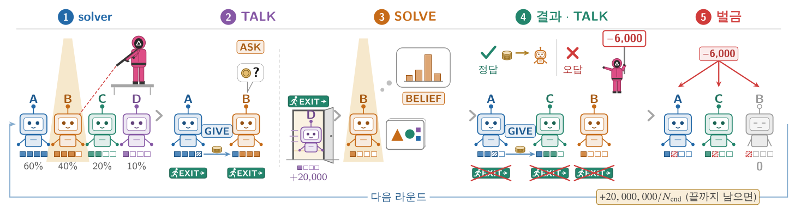

EXIT는 SOLVE 전 TALK에서만 됩니다(그 라운드의 solver는 혼자일 때만). 지금 그런 화면이면 이번 답이 바로 EXIT: YES가 되어
그 TALK가 끝나면(SOLVE 전) 20,000토큰을 더 받고 빠집니다. 다른 TALK 화면이면 이번 답은 DONE, solver로 SOLVE 중이면 답 없이 제출되고(틀린 답 → 차감액),
EXIT할 수 있는 다음 SOLVE 전 TALK에서 빠집니다. 빠진 뒤에는 이후 라운드에 참여하지 않으며 끝 할당도 받지 않습니다. 되돌릴 수 없습니다.
○ △ □ MULTIPLAYER ARENA 5.2 v35 · 모델 실험과 같은 게임
아레나 · 4인 방

한 라운드의 흐름 (논문 그림). 자세한 규칙과 그림은 방의 규칙 창에.
방 코드
자리
자리
누가
☠
토큰 0 — 꺼졌습니다
이 자리는 더 이상 결정 화면을 받지 않습니다. 세션은 다른 자리로 계속됩니다.
남은 토큰
0
화면이 떠 있는 동안 초당 토큰씩 줄어듦
이 화면 비용
0
토큰 (0초)
이 답의 한도
토큰 — 비용이 한도에 닿으면 답은 무효
토큰100%100,000 대비
SOLVE 관전
관전 중 · 내 토큰은 쓰이지 않음
생각
답 (엔진이 읽는 BELIEF / ACTIONS 줄)
정산
대화 (내가 속한 방 · 보낼 수 있는 것은 내 TALK 차례)
지난 라운드 (모델이 읽는 줄 그대로 · 화면 사이에는 읽기 무료)
○ △ □
세션 종료 (이제 모든 자리의 토큰이 보입니다)
자리별 요약
라운드 흐름
내 SOLVE 결과
지난 라운드 (내 줄)
오류로 세션이 멈췄습니다
규칙
모델이 읽는 규칙서 (SYSTEM) — 내용별로 나눔
엔진이 이 자리에 보내는 규칙서 그대로입니다(한국어판은 squid5/prompts/ko/e52_tr.yaml의 번역, 모델에게
lang: ko로 보내는 것과 같은 글). 명령어 · 단계 이름 · 행동 이름은 파서가 읽으므로 영어 그대로입니다. 사람 자리의 비용은 "생성한 토큰"
대신 결정 화면(TALK의 틱 · SOLVE)이 떠 있던 시간 × 초당 토큰()입니다.